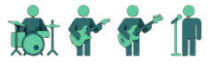
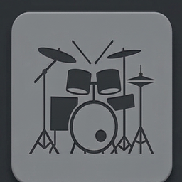
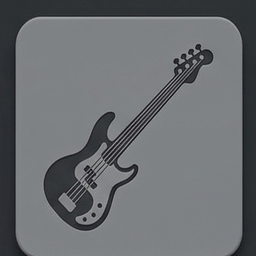
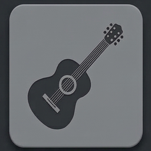
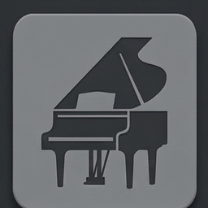
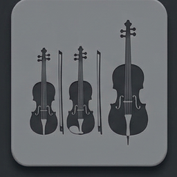

suMidi




suMidi è un generatore di brani MIDI che gira interamente nel tuo browser. Scegli tonalità, BPM e stile: il motore costruisce la struttura della canzone — intro, strofa, ritornello, bridge, outro — e la riempie con accordi, basso, batteria, chitarra, piano ed ensemble di archi, ognuno con il fraseggio del genere scelto.
I 13 stili disponibili sono MTV Unplugged, Folk Acoustic, Jazz Ballad, Neo Soul, Classical Chamber, Pop Rock, Blues Rock, Singer/Songwriter, Cinematic/Orchestral, Lo-Fi, Punk, Garage Rock e 8-Bit/Chiptune. Ognuno ha progressioni armoniche, groove e umanizzazione propri: non è lo stesso pattern con un suono diverso sopra.
Puoi ascoltare in pagina una singola sezione o il brano intero, poi esportare un file MIDI multi-traccia da aprire in qualsiasi DAW — Reaper, Ableton, Logic, FL Studio, Cubase — per cambiare i suoni, modificare le parti o usarlo come base di partenza.
Non serve registrarsi, non c'è niente da installare e non viene inviato nulla a un server: la generazione avviene sul tuo dispositivo. La musica nasce da regole di teoria musicale e da un generatore pseudo-casuale con seed, non da un modello di intelligenza artificiale addestrato su brani esistenti.